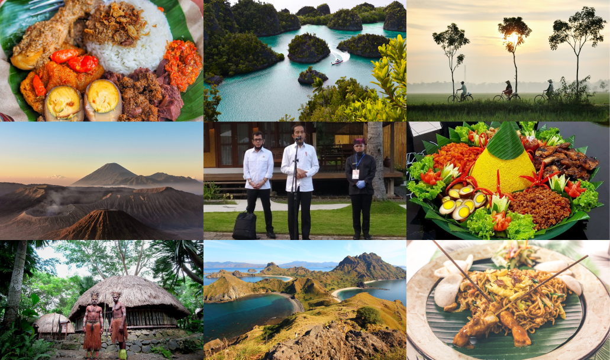

Tentang Kami

Sejak Presiden Joko Widodo-Jusuf Kalla dilantik, boleh dikata industri pariwisata mendapatkan perhatian khusus. Melalui Nawa Cita, sektor pariwisata ditetapkanmenjadi salah satu sektor prioritas pembangunan nasional. Sektor ini diharapkan bisa jadi leading sector dan sekaligus mampu menggerakkan sektor industri lainnya.
Data Kemenetrian Pariwisata 2018 menunjukkan, sejak 2013 sektor pariwisata menempati posisi keempat setelah minyak dan gas bumi, batubara, serta kelapa sawit sebagai penghasil devisa negara. Presiden Joko Widodo telah memberikan arahan untuk memajukan 10 destinasi wisata nasional. Sering disebut sebagai “10 Bali Baru Indonesia”.
Selain gencar mendorong deregulasi untuk mempermudah investasi dan proses izin usaha, pemerintahpun gencar membangun infrastruktur di sana-sini. Baik untuk memperbaiki kualitas infrastruktur di lokasi destinasi wisata maupun koneksitas antarkawasan di Indonesia.
Juga tak kalah pentingnya ialah mengimplementasikan kebijakan Kawasan Ekonomi Khusus di sektor pariwisata. Empat daerah telah ditetapkan pemerintah sebagai KEK Pariwisata, yakni KEK Mandalika, KEK Morotai, KEK Tanjung Lesung, dan KEK Tanjung Kelayang.
Bagaimana potretnya selama ini dan bagaimana proyeksinya nanti? Rasa-rasanya cukup signifikan. Tren kunjungan wisatawan mancanegara ke Indonesia sepanjang Pemerintahan Jokowi tercatat cukup tinggi.
Dari data Kementerian Pariwisata, mencatat pada 2014 jumlah wisatawan mancanegara sebanyak 9,4 juta. Maka setahun pemerintahan Jokowi, angka kunjungan naik sebesar 1 juta. Pada 2015 tercatat 10,4 juta. Tahun 2016 tercatat 11,5 juta. Tahun 2017 naik cukup signifikan menjadi 14,03 juta. Dan tahun 2018 tercatat sebanyak 15,8 juta.
Masih dari sumber yang sama, per Januari 2019 tercatat 1.158.162 tamu mancanegara berkunjung ke Indonesia. Ada kenaikan kisaran 58 ribu lebih dibandingkan bulan yang sama pada 2018, yang tercatat sebanyak 1.100.677 orang.
Mengambil slogan “Wonderful Indonesia”, sektor ini juga digeber sebegitu rupa menggunakan konsepsi branding yang piawai. Pemerintah sengaja menghelat beberapa even bergengsi di tingkat dunia sebagai langkah strategi yang tampaknya sangat jitu.
Sebutlah Asian Games 2018 dan Asian Para Games 2018, misalnya. Atau, masih di tahun yang sama, Indonesia mengambil momen perhelatan Pertemuan Tahunan IMF-Bank Dunia sebagai fasilitator MICE (Meeting, Incentive, Convention, and Exhibition).
Tak hendak bekerja setengah hati. Di tahun ini Indonesia bahkan juga bermaksud mengambil posisi fasilitator pada event kejuaraan balap motor paling bergengsi sedunia. Even MotoGP Tahun 2021. Mengambil model sirkuit jalanan, pembangunan sirkuit berlokasi di KEK Pariwisata Mandalika dimulai pada Oktober tahun ini.